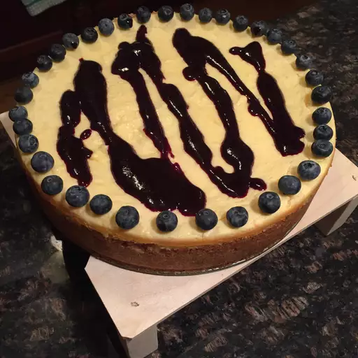

BLUEBERRY CHEESECAKE

What could be better? White chocolate, cheesecake and blueberry topping!
Ingredient
- 2 cups crushed graham crackers
- 1 cup slivered almonds
- ½ cup white sugar
- ¼ cup clarified butter, melted
- 2 tablespoons caramel topping
- 1 pound white chocolate, chopped
- 4 (8 ounce) packages cream cheese, softened
- ¾ cup white sugar
- 4 eggs, beaten
- 2 egg yolks
- 1 tablespoon all-purpose flour
- 1 teaspoon vanilla extract
- ½ cup white sugar
- 1 teaspoon cornstarch
- ¼ cup water
- 1 pint fresh blueberries
- 2 teaspoons lemon juice
Steps
-
Preheat oven to 275 degrees F (135 degrees C). Make the crust: In a food
processor, blend together the graham cracker crumbs, almonds and sugar
until the almonds are ground fine. Pour in the melted butter and caramel
while processing, until mixture is combined. Press the mixture onto the
bottom, and half way up the side of a 10 inch springform pan.
-
Make the filling: In a metal bowl over a pan of barely simmering water,
melt the white chocolate, stirring until smooth. Remove from heat and
set aside. In a large bowl, beat the cream cheese and 3/4 cup sugar
until smooth. Beat in the eggs and the egg yolks, one at a time. Beat in
the flour and the vanilla and blend in the melted white chocolate
slowly, beating until the filling is well combined. Pour filling into
crust.
-
Bake in the middle of preheated oven for 1 hour. Then turn off the heat,
and crack the oven door an inch, letting the cheesecake cool in the oven
to room temperature. Cover loosely and refrigerate overnight before
removing from pan.
-
Make the topping: In a saucepan, combine 1/2 cup sugar and cornstarch.
Stir in water and blueberries. Bring to a boil, then simmer for 10
minutes, stirring occasionally. Press through a fine sieve. Stir in
lemon juice, allow to cool, and store in a glass jar.
Back